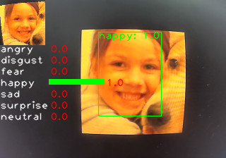
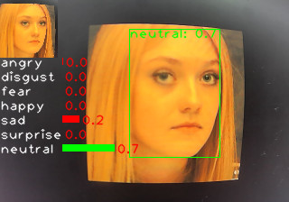

中文
中文MaixCAM MaixPy 人脸表情情绪识别、性别、口罩，年龄等识别
2026-02-02
更新历史
| 日期 | 版本 | 作者 | 更新内容 |
|---|---|---|---|
| 2025-01-010 | v1.0 | neucrack | 增加人脸情绪识别源码、文档、例程 |
简介
前面的文章人脸检测和少量关键点检测 和 [人脸多个关键点]中介绍了如何检测人脸，以及关键点，以及人脸识别，本文介绍如何识别人脸情绪（表情）。
以及介绍如何实现识别其它特征，比如性别、是否戴口罩、年龄等等。
 
在 MaixCAM 上的效果视频：
视频素材来自 oarriaga/face_classification
在 MaixCAM MaixPy 中使用人脸表情(情绪)识别
MaixPy 默认提供的情绪识别有 7 个分类，包括：
- angry: 生气
- disgust: 恶心
- fear: 害怕
- happy: 高兴
- sad: 悲伤
- surprise: 惊讶
- neutral: 自然状态
情绪识别分了几个步骤：
- 检测人脸。
- 将人脸裁切出来变成一个比较标准的人脸图，如上面图中左上角小图。
- 将小图使用一个简单的分类模型进行分类。
在MaixPy 中，先使用yolov8-face 模型进行人脸和眼睛的位置检测，然后再进行分类，代码如下，完整代码也可以在MaixPy examples目录中找到：
from maix import camera, display, image, nn, app
detect_conf_th = 0.5
detect_iou_th = 0.45
emotion_conf_th = 0.5
max_face_num = -1
crop_scale = 0.9
# detect face model
detector = nn.YOLOv8(model="/root/models/yolov8n_face.mud", dual_buff = False)
# we only use one of it's function to crop face from image, wo we not init model actually
landmarks_detector = nn.FaceLandmarks(model="")
# emotion classify model
classifier = nn.Classifier(model="/root/models/face_emotion.mud", dual_buff=False)
cam = camera.Camera(detector.input_width(), detector.input_height(), detector.input_format())
disp = display.Display()
# for draw result info
max_labels_length = 0
for label in classifier.labels:
size = image.string_size(label)
if size.width() > max_labels_length:
max_labels_length = size.width()
max_score_length = cam.width() / 4
while not app.need_exit():
img = cam.read()
results = []
objs = detector.detect(img, conf_th = detect_conf_th, iou_th = detect_iou_th, sort = 1)
count = 0
idxes = []
img_std_first : image.Image = None
for i, obj in enumerate(objs):
img_std = landmarks_detector.crop_image(img, obj.x, obj.y, obj.w, obj.h, obj.points,
classifier.input_width(), classifier.input_height(), crop_scale)
if img_std:
img_std_gray = img_std.to_format(image.Format.FMT_GRAYSCALE)
res = classifier.classify(img_std_gray, softmax=True)
results.append(res)
idxes.append(i)
if i == 0:
img_std_first = img_std
count += 1
if max_face_num > 0 and count >= max_face_num:
break
for i, res in enumerate(results):
# draw fisrt face detailed info
if i == 0:
img.draw_image(0, 0, img_std_first)
for j in range(len(classifier.labels)):
idx = res[j][0]
score = res[j][1]
img.draw_string(0, img_std_first.height() + idx * 16, classifier.labels[idx], image.COLOR_WHITE)
img.draw_rect(max_labels_length, int(img_std_first.height() + idx * 16), int(score * max_score_length), 8, image.COLOR_GREEN if score >= emotion_conf_th else image.COLOR_RED, -1)
img.draw_string(int(max_labels_length + score * max_score_length + 2), int(img_std_first.height() + idx * 16), f"{score:.1f}", image.COLOR_RED)
# draw on all face
color = image.COLOR_GREEN if res[0][1] >= emotion_conf_th else image.COLOR_RED
obj = objs[idxes[i]]
img.draw_rect(obj.x, obj.y, obj.w, obj.h, color, 1)
img.draw_string(obj.x, obj.y, f"{classifier.labels[res[0][0]]}: {res[0][1]:.1f}", color)
disp.show(img)
可以看到，这里核心代码就是：
objs = detector.detect(img, conf_th = detect_conf_th, iou_th = detect_iou_th, sort = 1)
img_std = landmarks_detector.crop_image(...)
img_std_gray = img_std.to_format(image.Format.FMT_GRAYSCALE)
res = classifier.classify(img_std_gray, softmax=True)
分别对应了上面讲的：
- 找人脸。
- 裁切人脸。
- 使用分类模型预测类别（输入用了灰度图像输入，所以先转为灰度图）。
优化识别精确度
MaixPy 默认提供了一个 7 分类的模型，是基于图片输入的分类，为了得到精确度更好的识别，以及更适合你你可以从以下方面优化模型：
- 用关键点作为分类模型的输入: 除了使用小图，也可以不用图像作为输入，可以前面文章中检测到的人脸关键点作为分类模型的输入，这样去掉了背景的影响，模型更容易训练，理论上精度更高。
- 优化数据集，增加样本量。
- 优化裁切图的步骤：这里裁切小图用了比较简单的变换，借用了
landmarks_detector.crop_image函数，利用人脸的两只眼睛的位置进行图像旋转和裁切。你也可以用更精准的变换算法讲脸变换到固定位置，比如人脸识别中使用的放射变换等。
自定义分类训练模型
这里只讲输入为图像的方式，为关键点数据的请自行琢磨。
详细步骤：
- 确定分类类别：比如上面的 7 个分类，或者识别性别、是否戴口罩等等。
- 确定模型：分类一般使用一个很小的分类模型即可，用几个卷积搭建的模型就可以，也可以用现成的比如 MobilenetV2 等模型，根据自己的精度要求和运行时间要求选择，建议直接用 Mobilenet 试试，跑通再尝试其它的。
- 确定训练平台：
- 可以直接使用 MaixHub 进行在线训练，创建分类项目，这种方式好处是无需搭建环境和写代码，一键训练生成模型（推荐）。
- 也可以自己在本地搭建 pytorch 或者 tensorflow 环境，自行搜索 mobilenet 分类模型训练教程。
- 采集数据：直接基于上面的代码修改为采集程序，比如把摄像头读取到的
img以及裁切过后的img_std标准人脸图像都采集保存到文件系统（使用img.save("/root/image0.jpg")类似的方法），然后传输到电脑备用。 - 其它数据集：当然你也可以从网上找数据，最好是用 MaixPy 识别一遍将标准图像裁切出来保存。
- 数据清洗：检查一下数据中是否有不正确的数据，进行整理，每个类别放一个文件夹下。
- 训练：
- 在 MaixHub 上传数据进行训练：会得到一个包含模型文件的压缩包，直接是 MaixPy 支持的格式。
- 离线训练：训练完成后需要转换成 onnx 模型格式，然后按照模型转换为MUD文件 进行模型转换，安装环境会比较麻烦。
- 运行：替换例程中的分类模型即可。
识别其它面部特征，比如性别、是否戴口罩、年龄等
如上面所说，原理和训练情绪识别一样，用一个分类模型，使用不同数据即可，识别年龄这种数值需要使用回归模型，可以自行网上搜索学习。